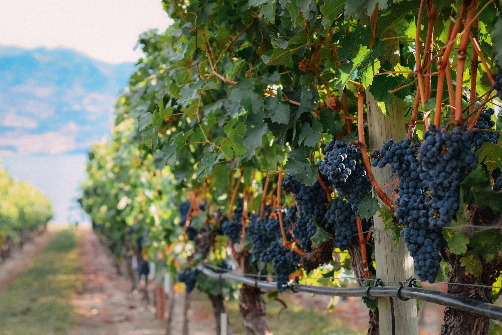
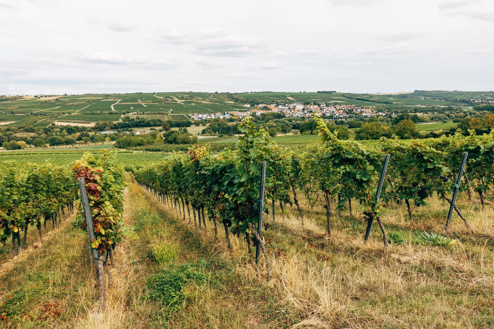

Crop and canopy
Crop load and canopy growth, considered against the block’s production target.

Variety, site conditions and crop load affect a vineyard’s nutrition requirements. Hybrid-Ag uses block history and available soil, plant and fruit results to guide prescription blends and recommendations for the season.
Yield is considered alongside canopy growth, fruit composition and condition. Harvest timing and the requirements of the winery or market also inform the recommendations.
Crop load and canopy growth, considered against the block’s production target.
Crop volume interpreted alongside variety, region, production target and the requirements of the winery or market.
Sugars, acidity, colour, flavour and aroma development, and other fruit measures read at the relevant stage.
Berry and bunch condition, uniformity and progress towards the planned harvest.
A general program is a starting point. The details below help the team assess what is appropriate for a particular block.
Wine or table grapes, the destination for the fruit and the quality or market specification being targeted.
Variety, clone, rootstock, vine age, vigour and training system all change how the same result should be interpreted.
Region, soil, rooting environment, water source and delivery system shape what is available to the vine.
Weather, crop load, previous tests, input history and what the fruit showed last season help explain the current results.

We review soil conditions alongside plant results, growth stage and fruit requirements. No single test gives a complete assessment of the vineyard.
Canopy, root, inflorescence and berry development overlap. The program follows the block’s real growth stage, using modified E-L references where useful, rather than assuming every region or variety moves together.
Review yield, fruit results and vine condition when planning post-harvest nutrition and testing for the next season.
Review soil and root-zone conditions, differences across the block, water and longer-term priorities before growth resumes.
Stored reserves, root activity, rapid shoot growth and canopy development overlap. Interpret results with the growth stage, vigour and site conditions in mind.
Assess inflorescence development, cap fall and fruit set alongside growing conditions, the production target and current block results.
Cell division gives way to expansion while canopy demand continues. Plant data and field observations are read against the actual stage.
Review ripening, fruit composition and condition against the harvest target while the vine continues towards cane maturity.
These questions help us relate the results to the block, production target and season.
Establish variety and rootstock, production target, crop load, current growth stage and the soil, water, plant and fruit evidence available.
Compare previous tests and sample dates with changes through the season, application history and fruit results.
Agree on what needs attention now, what can wait until a later stage and what needs checking.
Variety, region, production target and stage.
Root-zone structure, mineral balance, Carbon and biology.
Water quality, source and planned use.
Leaf, sap, canopy, vigour and crop load.
Yield, composition, condition and destination.

Nathan Strawbridge works across Viticulture and Horticulture in South Australia and western Victoria, including McLaren Vale, the Adelaide Hills, the Barossa and the Riverland. The wider team helps interpret the tests and field observations, taking account of what is practical in the block.
Tell us about the block and its current stage, and share any results you already have.